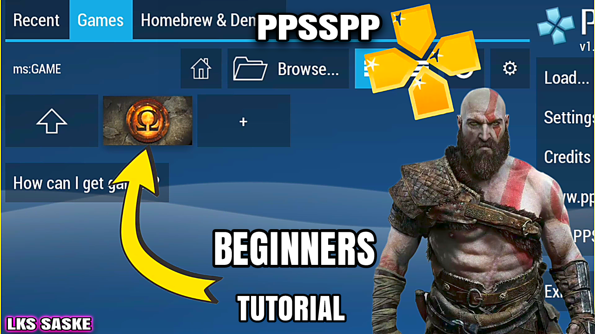

EXPLORE MORE GAMES AND GUIDES
Getting trophies and titles and also going upto more than 15 games undefeated is what all gamers desire to achieve in FCM 24 game. It would be shameful if I gave you tactics then fail to achieve them and that's why I will leave arsenal for Scotland...FCM 24 FULL TACTICS | FOOTBAL CLUB MANAGMENT 2024 TACTICS

Geometry Dash Lite is a popular mobile game developed by Swedish game developer Robert Topala and released in August 2013. The game is a rhythm-based platformer that has gained a large following due to its challenging gameplay, catchy music, and vibrant graphics. In this article, we will take an in-depth look at Geometry Dash Lite, exploring its gameplay mechanics, level design, and overall appeal...
GEOMETRIC DASH LITE| THE EXCLUSIVE GUIDE AND GAMEPLAY
Download the PPSSPP APK The first step in using PPSSPP is to download the APK file. You can do this by searching for PPSSPP on any APK download website or by visiting the official PPSSPP website...
Mastering PPSSPP: How to Play Your Favorite PSP Games on Your Phone or PC!

We all love this game ‚ô•Ô∏è‚ô•Ô∏è especially when updated with current transfers and leagues.üåüüåü the game requires android 7+ Mobile devices to work. The game was developed by KONAMI in 2011. We all know football is the most entertaining sport in the world...
WINNING ELEVEN 2012 MOD 2024/PES 2012 MOD 2024 - BY LKS SASKE

We all know FIFA which is the current EA SPORTS FC game and is the most played in many devices like pc, mobile and console since it's production (EA SPORTS). FIFA 16 is always appealing and attracts the attention of many gamers because of it cool graphics ...
FIFA 16 PPSSPP MOD EA SPORTS FC 24 ANDROID OFFLINE BEST GRAPHICS PS5 ALL NEW FACES & LAST TRANSFER

Pro league soccer is one of the most played offline football games produced by RASU GAMES and played around the world in mobile and iOS devices. With its cool features and gameplay makes it among the best available in the Google playstore and app store. Just like other games...
Pro League Soccer MOD Team Logos , Kits & Transfer 2024 Android |PLS 24|

Mobile gaming has come a long way in recent years, with developers constantly pushing the boundaries of what is possible on smartphones and tablets. Real Football 2022 is one such example, a game that seeks to replicate the thrill and excitement of real-life football in the palm of your hand. In this article, we will explore the various features and gameplay elements of Real Football 2022, and assess whether it lives up to the hype...
Real Football 2022 Android (RF 22) Mod Apk,Obb & Data Offline Download For Android

TECH UPDATE AND SOFTWARE TUTORIALS
The display over other apps feature has been a challenge to most of the Android and iOS users for the New update tech versions. With this option turned off, most of the people are limited things like screen recording, doing live streams and background playing options. This option is always turned off within the system itself only to make your phone faster but deny you the advanced and important use of some features within different apps and platforms...SOLUTION FOR DISPLAY OVER OTHER APPS FEATURE NOT AVAILABLE
.png)
use the provided graphics settings for your ppspp for a fast running game and system. The provided set up will run on both the low end and high end devices. incase of any black screen experienced, you can turn off the skip bufter option...
PPSSPP SETTINGS - HOW TO DO SETTINGS FOR PPSSPP